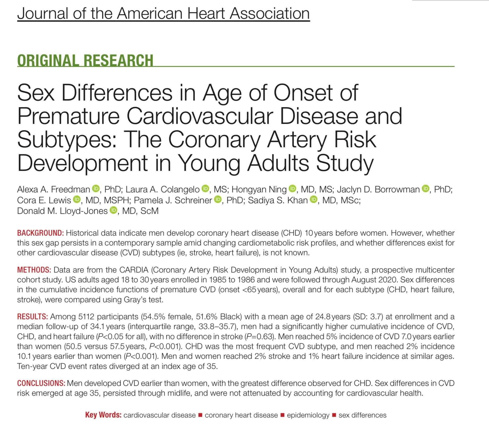
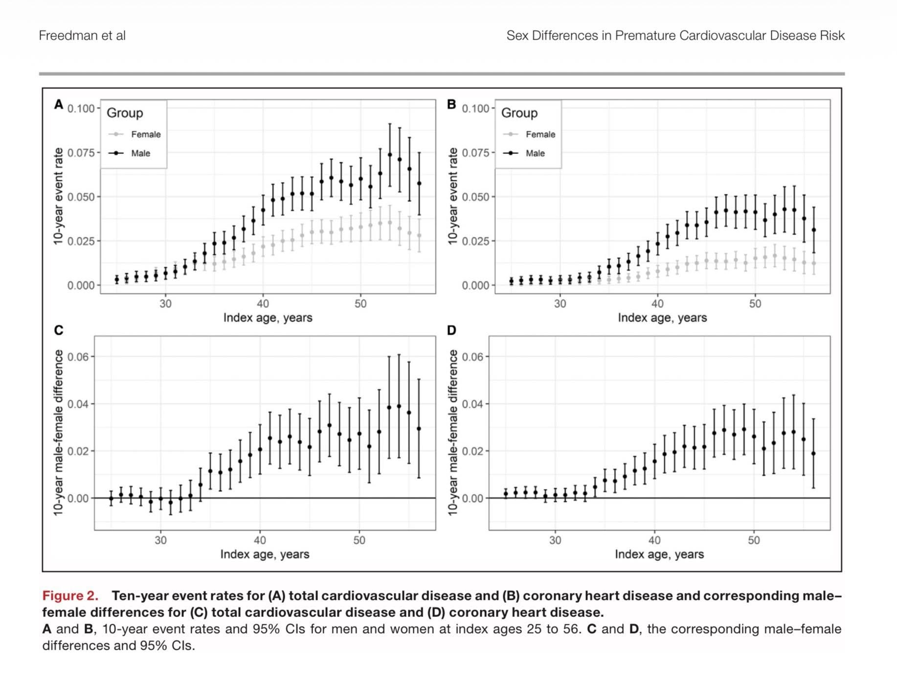
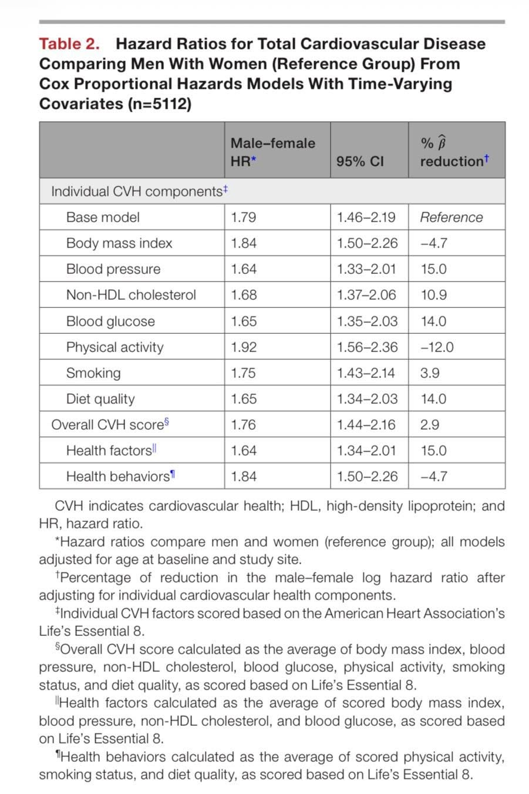

Men develop CVD about 7 years earlier than women, on average.
#sexdifferencesHD #cvdHD
New research in JAHA highlights an important reality in cardiovascular prevention
Men develop cardiovascular disease ~7 years earlier than women, driven largely by earlier onset of coronary heart disease. What’s striking: these differences emerge as early as age 35 and persist through midlife—even after accounting for traditional cardiovascular risk factors.
Paper · J Am Heart Assoc · 2026Sex Differences in Age of Onset of Premature Cardiovascular Disease and Subtypes: The Coronary Artery Risk Development in Young Adults Study.Conclusion: Men developed CVD earlier than women, with the greatest difference observed for CHD. Sex differences in CVD risk emerged at age 35, persisted through midlife, and were not attenuated by accounting for cardiovascular health.pubmed.ncbi.nlm.nih.gov
This reinforces a key message for clinicians, researchers, and health systems: young adulthood matters. Early risk assessment and prevention strategies, especially for men, may be critical to closing this gap.
One possible piece of the puzzle: central adiposity (“belly fat”).
Visceral adipose tissue (VAT) is more tightly linked than subcutaneous fat to:
- insulin resistance / dysglycemia
- hypertension
- atherogenic dyslipidemia
- systemic inflammation
—so it can plausibly accelerate atherogenesis even at similar BMI.
In CARDIA, among “traditional” factors, bood pressure and glycemia were among the strongest attenuators of the male–female risk gap, but the gap didn’t disappear, suggesting additional sex-specific biology and pathways beyond standard RFs.
And “belly fat” matters in women too:
- In young adults, abdominal adiposity (waist/WHR) has been linked to coronary artery calcium (subclinical atherosclerosis) in CARDIA.
- In the Million Women Study, waist circumference predicts CHD incidence within BMI categories (centrality ≠ BMI).
- Even earlier, higher VAT has been associated with greater carotid IMT in adolescents.
Prevention can’t wait until midlife.
#CardiovascularHealth #Prevention #Epidemiology #PublicHealth #HeartDisease #Cardiology #MetabolicHealth



